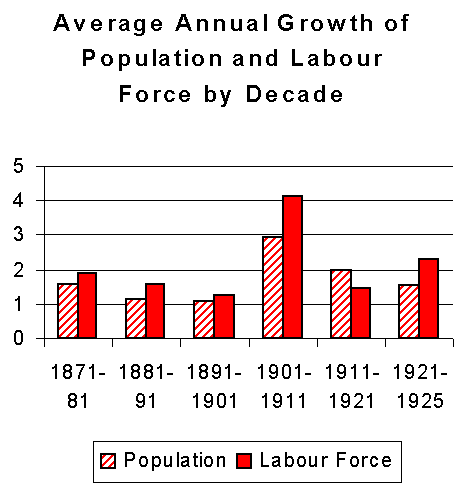

Industrialization in Canada
By the beginning of the 20th century industrialization was well under way. This produced major shifts in the economy and society: moving labour from an agricultural to a manufacturing focus, and shifting the population from rural areas to urban centres. While industrial development in Canada began well before Confederation in 1867, it accelerated dramatically from 1900 to the 1920s.
Click each section below to learn more about key developments in early 20th century Canada.
New forms of power, like steam and fossil fuels, as well as new technologies to produce high quality steel and machines were introduced. Work became increasingly concentrated around manufacturing consumer goods like textiles, foodstuffs, and furniture in large urban workshops (mostly located in Toronto and Montreal). This process became known as industrialization. Think of the Steinway Piano company from the podcast – this company could only exist because of the ability for raw materials, labour, and capital to be concentrated in large productive urban centres. The development of steam-powered locomotion and a national railway also meant goods could be shipped quickly across the country without relying as much on waterways.
Other important features of industrialization were the concentration of workers, the development of a managerial class that no longer worked alongside the workers, and the rise of a professional managerial class. The professional managerial class was increasingly trained through separate educational institutions as opposed to the craft-specific training that the labourers would receive. As machines became more sophisticated and were able to produce more goods, workers required less skills to produce these goods, a process called “de-skilling.” Many workers no longer required craft-specific skills and their labour became transferable from one job to another doing general tasks.
The following chart shows the rapid growth of the labour force, especially during 1901-1911. This was largely due to the influx of many immigrants of labour force age.
During industrialization, government policy was originally non-interventionist in the Canadian economy. Prior to Canada becoming a separate country, colonial governments in Europe did little to affect economic development and few taxes, levies, or tariffs existed. After Canada confederated as a separate country from England in 1867, a number of economic measures were enacted to help Corporations access protected markets. For example, tariffs were developed to protect domestic industry by ensuring foreign goods entering the economy were priced higher than domestic goods.
Supplementary Reading
Read more about Industrialization in this online course in Canadian Economic Development .
Also view this Prezi presentation Urbanization and Industrialization in Canada during the twentieth century .
References:
Rea, K.J (2003). 8. Industrialization. In Canadian Economic Development [Online Course]. Retrieved January 18, 2016 from http://homes.chass.utoronto.ca/~echist/lec8.htm.
Image Copyright:
Denley, Norman. Library and Archives Canada, PA-066530. (1880-1900) Station at Clagary, Alberta, circa 1880-1900. Creative Commons-CC BY 2.0.
By Unknown. (1907)PostcardToCanadaForInvestmentInCanada1907. Licensed under Public Domain via Commons..
{kind=link}